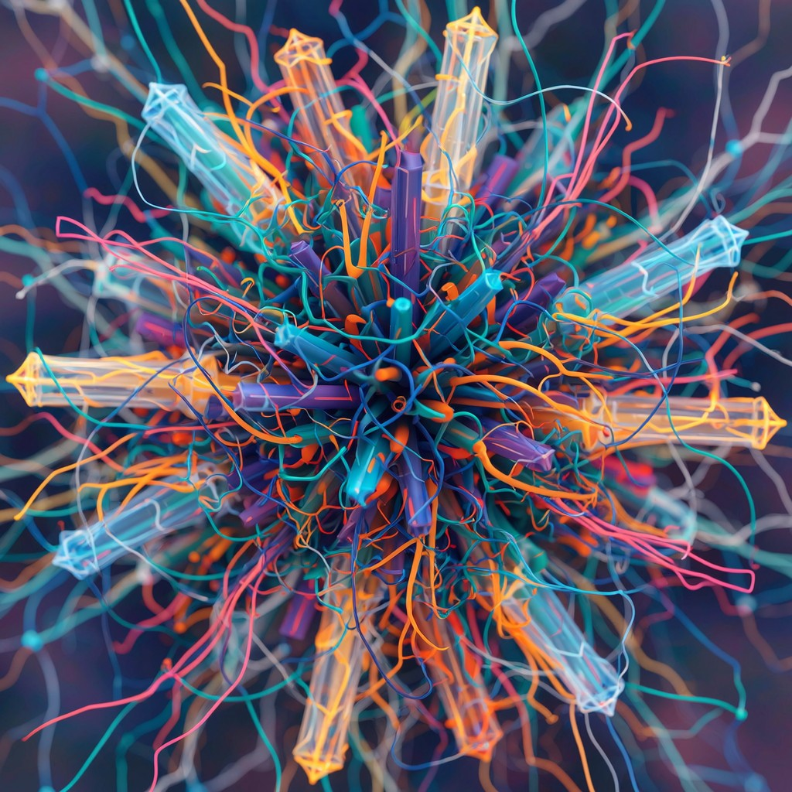

A New Lens for a Global Problem
TBI affects millions, yet remains widely misunderstood. Our work brings a modern, human‑centered framework that helps communities, educators, clinicians, and families finally understand what survivors experience.